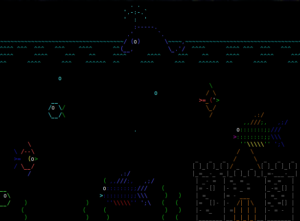
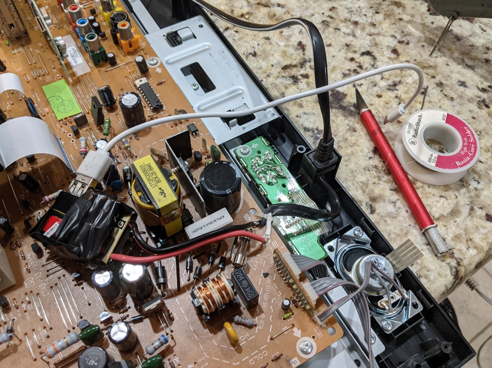
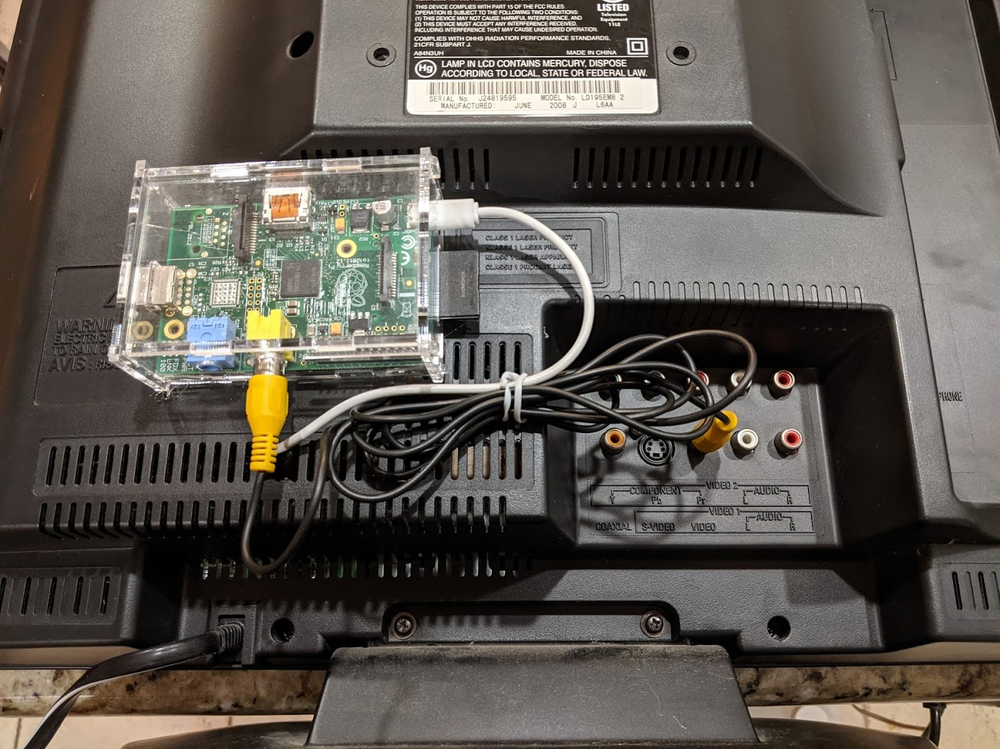
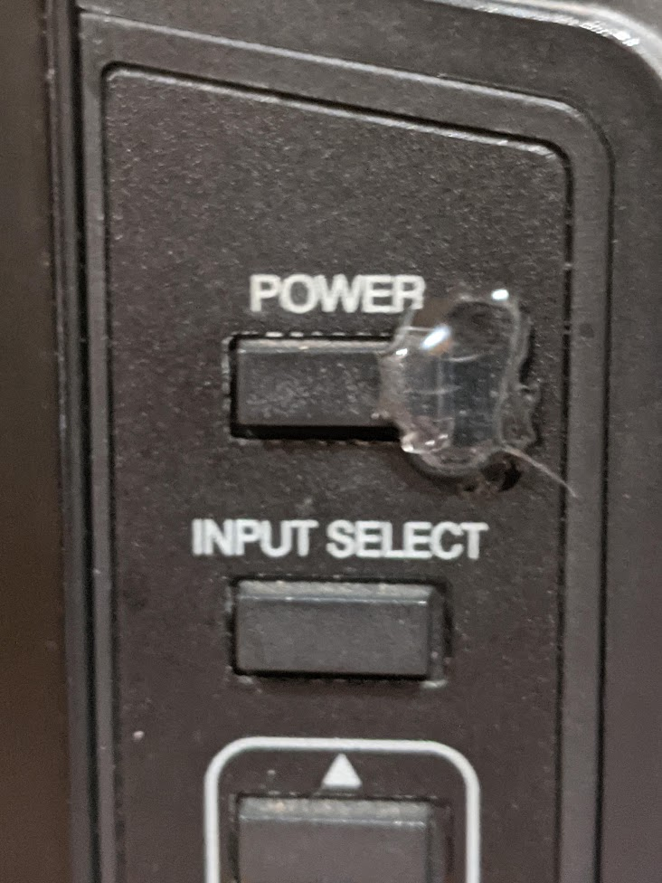
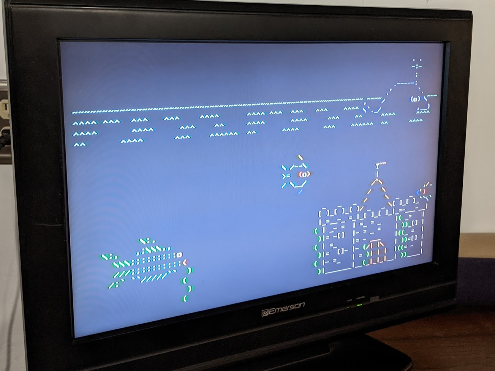

The Aquarium
Sometimes a project just sticks in your head and won't let go; for days, months, or even years. This is the story of one such project.
ASCIIQuarium
In a previous job as a software developer around 2016, I came across this script from Kirk Baucom called asciiquarium. It's a single-file script that animates a lovely ocean scene using only text! Fish swim, a small castle chills out in the corner, and occasionally special events happen (watch for the shark and appearances of Nessie!). I ran it in a small terminal window every day around my normal work, enjoying it simply for being a quick escape from whatever problem I was working on at the time.

During that time, I had an idea: use a low-power computer, an old display, and a bit of solder to create a permanent display for asciiquarium to have my very own digital fish tank that wouldn't need feeding (and had pretty colors)! It took a long time to come to fruition, but I'm incredibly happy with how it turned out. Read on for details!
The Parts
The original plan was to use a Raspberry Pi Zero (I have a lot of them), but when I ventured out to the garage to see what I could find in terms of a screen, the only thing that came up in my search was my partner's old 22" TV from college. As an older TV, my connection options were limited to VGA, RCA, component, or S-Video. That wasn't a total killer though, because the Raspberry Pi 1 Model A (retro circa 2013!) has an RCA video out!

Our donor screen is an Emerson 22" TV / DVD combo. It served a loyal life, delivering many marathons of the Lord of the Rings (extended editions!), but was eventually relegated to the garage. There's no remote anymore, so who knows what extra features it's supposed to have. What we care about, and what matters, is that when it turns on, it launches directly into Video 1 mode (where our RCA input is plugged in).
To power the Pi, I found an old Samsung phone charger that we don't have anymore and a no-brand micro-USB cable. After testing to ensure that it met the power requirements of the Pi, it was time to get the software sorted.
The Software
ASCIIQuarium is a relatively small script written in Perl that only needs a little bit of setup in order to get working. The original source can be downloaded from Kirk Baucom's site, but the version I'm running is actually one that I edited myself to reduce the frequency of special events and make it more suited for this type of installation. The modified version can be downloaded from GitHub.
I want to give a major shout-out to the Raspberry Pi Foundation for their amazing support of old hardware; getting the Pi set up was a breeze by just downloading the latest command-line-only version of Raspbian and flashing it to an SD card using the new Raspberry Pi Imager.
Note
I ran into one issue with LC_LOCALES and other keys not being set correctly; running "raspi-config" and setting the locale information there fixed the problem after rebooting.
Perl is included in the default of Raspbian, so the only requirements we have are to install the curses library (a library that allows us to draw in the terminal) and install the Term::Animation package using Perl's CPAN command to actually handle the movements.
# this first part might take a while
sudo apt update
sudo apt upgrade -y
# dependencies!
sudo apt install libcurses-perl git
sudo cpan install Term::Animation # just accept the defaults if it asks you things
# Grab the modified code
git clone https://github.com/itsthejoker/asciiquarium
After cloning the repo, we can move into the folder (cd asciiquarium) and make the program runnable with chmod +x asciiquarium. Running it by calling ./asciiqurium shows that it works and everything's animating! The last thing to do is make it run on startup, which is easily doable by adding an extra line to the .bash_profile file: /home/pi/asciiquarium/asciiquarium.
The Assembly
Actually assembling everything is fairly straight-forward, but it did require some soldering. One of the things that I wanted for this build was that it would only require one cable; that meant that I had to wire the USB charger into the TV somehow. After cracking open the charger to free the circuit board, opening up the back of the TV (don't do this unless you know what you're doing!) showed that there was a great safe place to solder in the charger with access to the 120v power cable. Test fits and a little hot glue helped secure the charger in an out-of-the-way location on the main board of the TV.

With the USB power in place, only two things remain: securing the Pi to the back of the TV and getting it ready to install. The first was easy enough to solve with -- you guessed it -- more hot glue (though the Pi was placed into a case first!). The wiring was connected again to make sure it worked, and this is the wiring arrangement I came up with:

After confirming that it worked as expected, the next step is to pull the SD card and back it up. This installation will be turned on and off by the power plug through a timer, so it's important to make the operating system read-only to guard against corruption. After making it read-only, no changes can be made -- so backing it up prior to performing that operation is critical.
Danger
Seriously, if you're following along, back up your SD card now. Take a full disk image using something like Win32Imager -- you don't want to make your OS read-only and THEN find out that something is wrong. You'd have to wipe it and start from scratch.
I used this article from Adafruit to actually perform the operation with the card plugged into a different Pi, and as far as I can tell it worked perfectly. When the SD card was slotted back into the Pi on the TV, everything worked perfectly!
...well, almost. It turns out that pretty much all TVs are designed so that when they're plugged in, they don't turn on automatically. This is a problem for this install because it'll be turned on and off by the timer. Thankfully, the internet comes through once more with a solution... involving more hot glue.

The Results
Officially, that brings this "aquarium" to completion. A single power cable, easy power control, and lovely analog feel thanks to the RCA cable -- overall a really easy project that's been several years in the making.

Did you enjoy this writeup? Do you want to seem more of these projects? Let me know on Twitter!